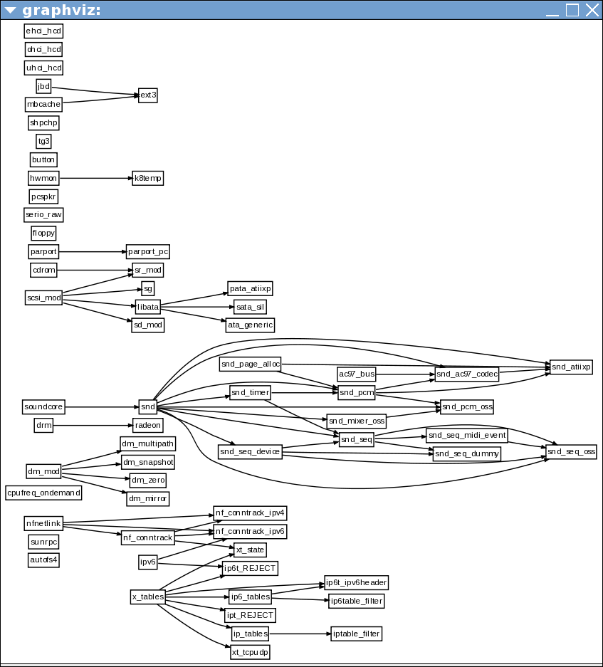

The script extracts the Linux kernel modules and dependencies from /proc/modules and generates a graph like the one below. I don't know if this actually useful for Linux, but it demonstrates loading of the "gv" extension, the generation of a graph, and the layout and display of that graph.
The scripts are currently incomplete because John Ellson is not familiar enough with all of the languages to write them. Your help is solicited to complete the set.
It seems there is some variation /proc/modules syntax. This one is the one I will be testing against. Bonus points if your script can handle the these variations (details unknown at this point).
| language | demo | credit | status | comment |
|---|---|---|---|---|
| C# | 0% | |||
| Guile | 0% | |||
| Java | 0% | |||
| Lua | modgraph.lua | 90% | official location for binary extension? | |
| OCaml | 0% | |||
| PERL | Max Bakermodgraph.pl | 75% | problem with /proc/module syntax variation | |
| PHP | modgraph.php | John Ellson | 100% | |
| Python | modgraph.py | Michael Hohn | 100% | |
| R | 0% | |||
| Ruby | modgraph.rb | 50% | needs code porting | |
| TCL | modgraph.tcl | John Ellson | 100% |
